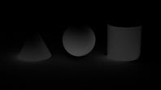
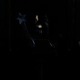
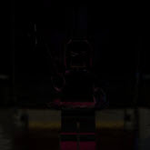

用于图像合成的 AOV
| RGBA（美景）AOV |
本教程是使用 AOV 进行合成的初学者手册。应注意，所需的 AOV 取决于合成者的特定要求，以及他们使用这些 AOV 的方式。因此，建议先弄清楚所需的 AOV，然后再将其渲染出来。如果您不熟悉渲染过程 (AOV)，您可能想知道合成最终渲染需要哪些 AOV。这一切取决于多种因素，尤其是设置的材质和灯光、您在着色器中使用的组件以及您需要对最终图像所做的处理。但是，有时美景渲染就足够了。
合成美景 AOV
我们可以将 RGBA 美景 AOV 分割成多个较小的 AOV，每个 AOV 包含部分照明。在合成过程中，可以单独修改这些 AOV，然后将它们加在一起，得到完整的美景 AOV。AOV 越多越可以更好地控制合成，但也需要处理额外工作，它们会占用更多内存和磁盘空间，特别是与灯光组相结合时更是如此。
下面是一些将 AOV 添加在一起以获得完整美景 AOV 的示例：
- direct、indirect、emission、background。
- diffuse、specular、coat、transmission、sss、volume、emission、background。
- diffuse_direct、diffuse_indirect、specular_direct、specular_indirect、coat、transmission、sss、volume、emission、background。
只需将此类 AOV 添加在一起便可获得美景 AOV。
标准曲面 AOV
例如，我们来看看 standard_surface 着色器的组成方式以及其中有哪些 AOV。首先要考虑的是以下各部分，因为它们可以分为不同的 AOV。
| standard_surface 着色器 |
这是我们查看 AOV 列表时看到的内容。我们可以在 AOV 列表中看到上述所有组件，但除了 standard_surface 着色器中的 AOV 之外，还有其他 AOV。
| AOV 列表 |
我们可以看到一些组件分为四个 AOV，例如，对于涂层， 有 coat_albedo、 coat_direct 和 coat_indirect。此外，还有一些直接和间接 AOV，没有基础 AOV，但有漫反射 AOV。standard_surface 模拟基于物理的着色器，因此漫反射参数命名为“base”。现在我们有漫反射、镜面反射、SSS、涂层、光泽 以及其他 AOV。这些 AOV 可用于在合成软件包中构建最终图像。具有 _albedo 索引的 AOV 为组件的纯色。为该着色器的“颜色”(Color)参数指定了纹理（纯色）。
美景AOV |
specular_albedoAOV |
直接和间接 AOV
现在来看看 _direct 和 _indirect AOV 的用途。它们组合在一起时，用途基本与漫反射 AOV 相同，但分为相应的灯光组件。直接是指来自光源的直接光线，间接是指在直接光线照射到几何体时从几何体反射光线（光线深度参数控制此光线反弹的发生次数）。下面是一个简单示例：
 |
| 1：直接光线来自光源。2：从表面反弹的间接光线。 |
现在，如果我们合成 diffuse_direct + diffuse_indirect，则得到的结果与在漫反射 AOV 中完全相同。这同样适用于 standard_surface 着色器中的其他 AOV。
|  | ||
| diffuse_direct + diffuse_indirect = 漫反射 AOV |
美景 (RGBA) AOV
对于普通直接 和间接 过程，这是 RGBA（美景） 渲染，只是扩展到直接 和间接 光线。RGBA 包含完全渲染的图像，而图像中包含所有材质和灯光设置。
 |
| 直接 + 间接 = RGBA（美景）AOV |
合成
现在，我们学习了着色器的工作方式，接下来我们可以继续进行下一阶段，具体来说就是确定合成图像需要哪些 AOV。简而言之：
- 无。美景 (RGBA) 渲染对我们来说足够了，即，当所有一切都已调整好并且不需要在合成中进行任何更正时使用美景 (RGBA) 渲染即可。
| RGBA（美景）AOV |
- 第二种方法是可以采用组件 AOV：漫反射、镜面反射、自发光等，具体取决于在着色器中使用的属性。可以将颜色校正和曝光与任一 AOV 结合使用来进行某些调整时使用此方法。
 |
- 后一种方法是将渲染分为组件 AOV，同时考虑 _direct 和 _indirect。需要在合成渲染器时进行大量控制（包括颜色校正、降噪等）时使用此方法。
|  | ||
| diffuse_direct | diffuse_indirect | specular_direct |
|  | ||
| specular_indirect | sss_direct | sss_indirect |
- 重建美景 AOV 不需要反照率 AOV，但是有些情况下可能需要使用反照率 AOV，例如通过将 diffuse 除以 diffuse_albedo 以便只获取没有曲面纹理的原始照明时，或者仅对照明降噪而保持颜色纹理细节不变时。
| albedo | diffuse_albedo | sss_albedo |
diffuse_albedo 中存在菲涅尔是因为存在 specular_IOR 以及它对漫反射反照率的影响程度（以使其节能）。因此，如果没有镜面反射，diffuse_albedo 中就没有菲涅尔，因为所有能量都在漫反射中。
- 除了美景 AOV 外，还可以使用其他技术工具 AOV，例如 ID 遮罩，您可以通过它们选择大型场景中的特定对象并对其进行操纵。
| 用于在合成中选择对象的 RGB ID 遮罩 |
可使用工具 AOV 的其他示例包括：
- motionVector（速度）：用于校正运动模糊的值。
- Z：深度通道，用于散焦或虚设霭/雾。
- P & N：用于对对象进行简单重新照明。
- albedo：可在降噪后用于安全信息。
- cryptomatte： 自动材质 ID 遮罩、对象遮罩、资源遮罩（需要为合成工具安装）。
非常感谢 Slava Sych 为本教程提供的帮助。